Ranged Vanguard
Experts in tinkering and technology, the Order of Engineering follows the Founder’s schematics and constantly seeks to improve upon them. They primarily work in workshops, but in times of war, they serve as highly trained ranged soldiers, providing devastating fire support.
Recruits begin as Archers, learning precision and target acquisition. They quickly advance to Crossbowmen. From there, their paths diverge based on mechanical preference.
Some specialize in defensive tech and heavy mechanics, becoming Arbalesters and eventually Engineers, deploying portable pavises and ballistae. Others focus on the volatile power of gunpowder, evolving into Marksmen and Sharpshooters equipped with deadly arquebuses.
Those who master both the heavy armor of the defensive path and the explosive firepower of the gunpowder line ascend to become Dragoons. Conversely, the Rangers lead the Order not from the workshop, but from the wilds, utilizing traps, tactical awareness, and lethal explosive shots as battlefield Officers.

Active Roster
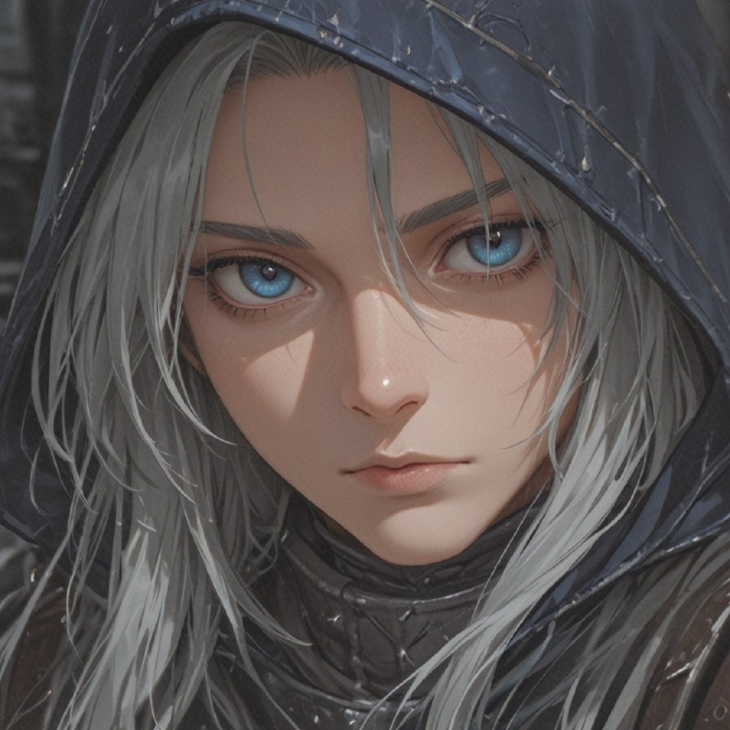
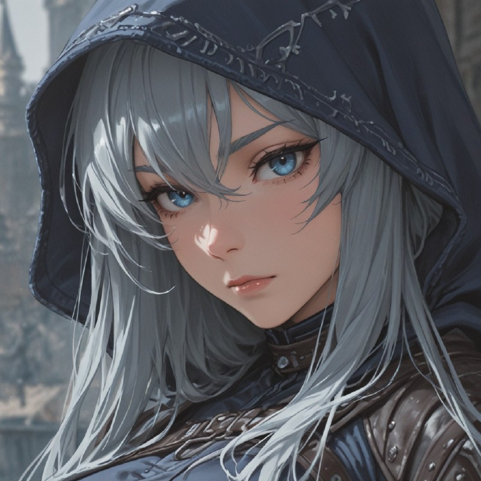
Ranger
Wilderness survivalists and tactical commanders. They provide battlefield support with traps and explosive arrows while bolstering allied accuracy.
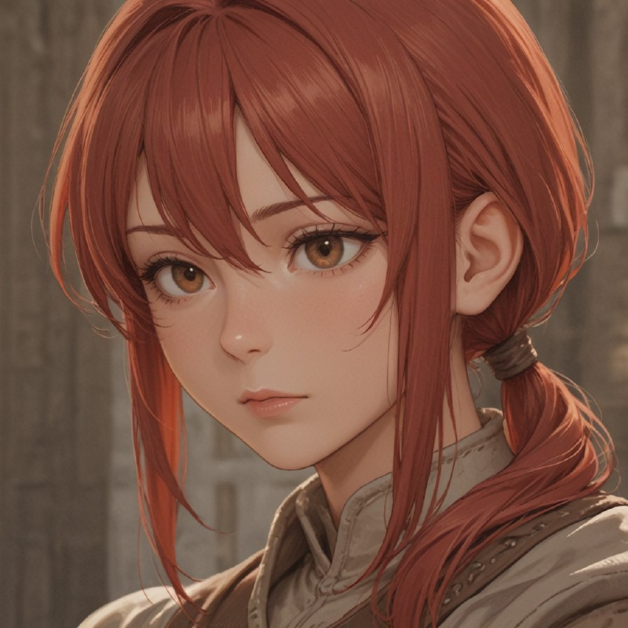
Archer
Recruits given a basic bow to learn precision. They form the initial line of ranged harassment, excelling at targeting key enemy units.
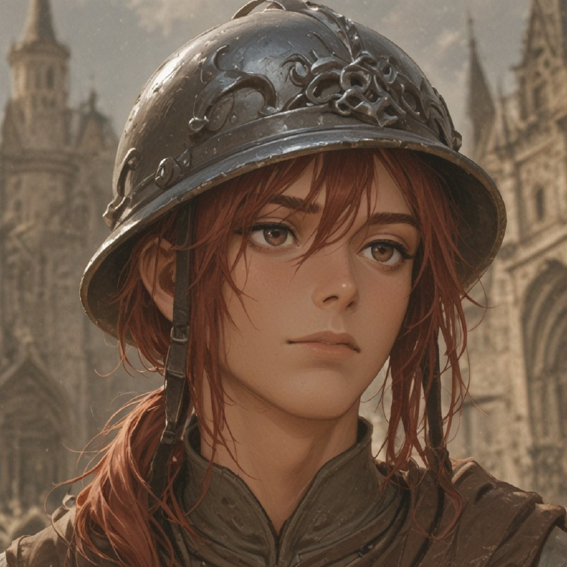
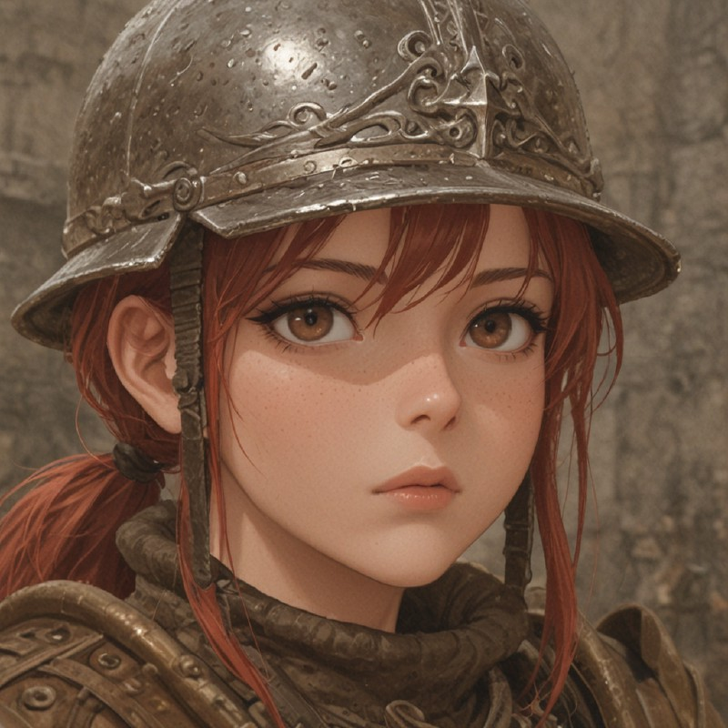
Crossbowman
Experienced archers equipped with customized mechanical crossbows. They gain the ability to launch penetrating shots that punch through the frontline.
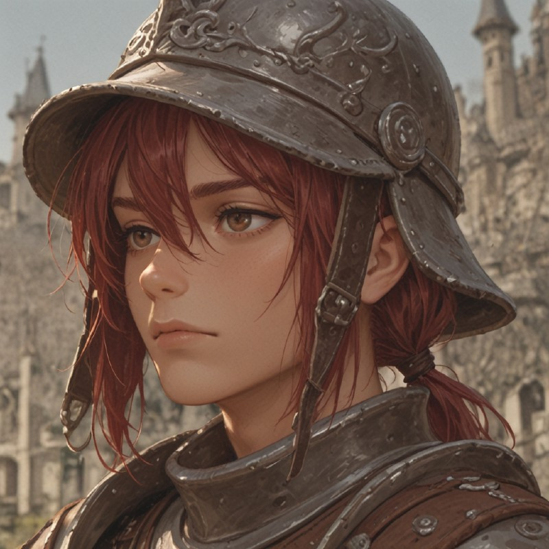
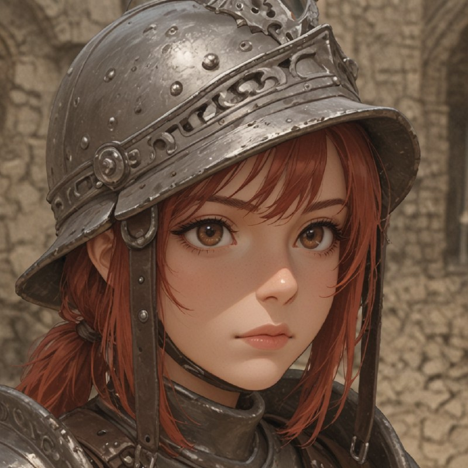
Arbalester
Heavily armored marksmen carrying massive arbalests and portable pavises. They trade mobility for superior survivability and stopping power.
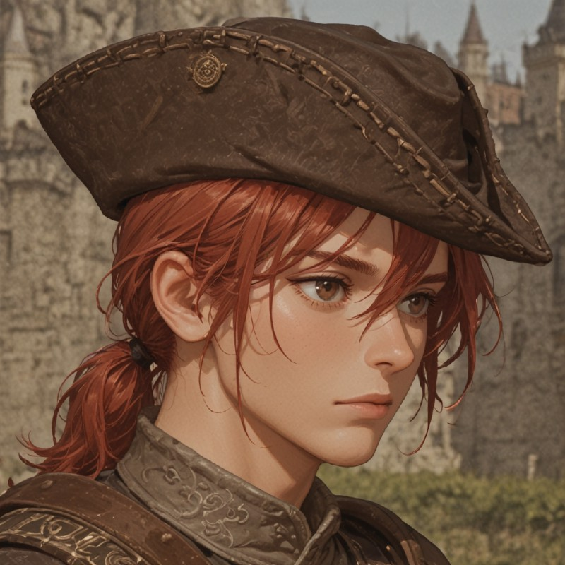
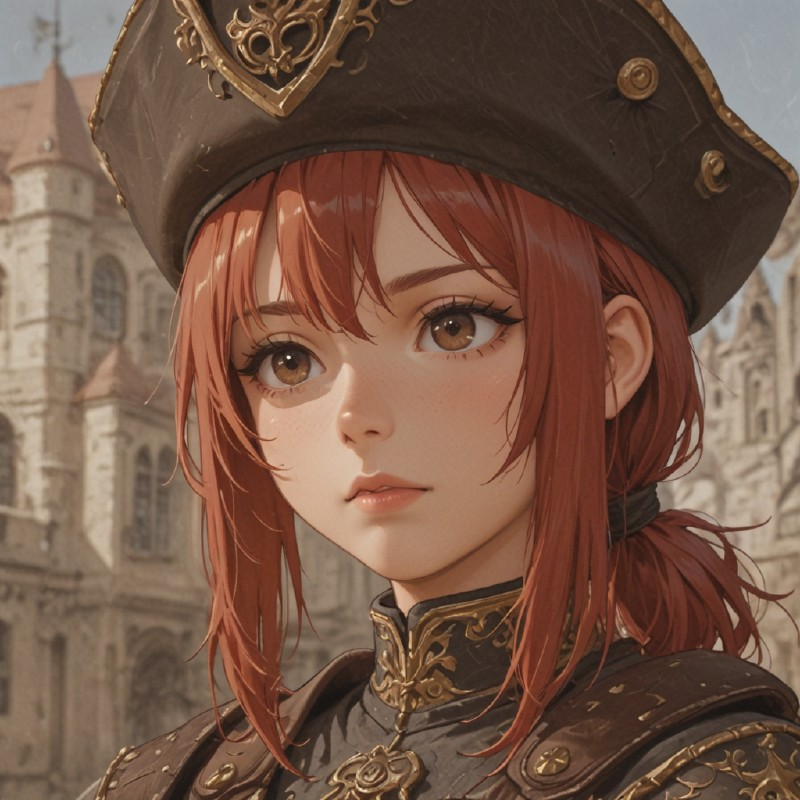
Marksman
Pioneers of the Founder's technology. They wield powerful arquebuses that ignore armor, though they must carefully manage complex reload sequences.
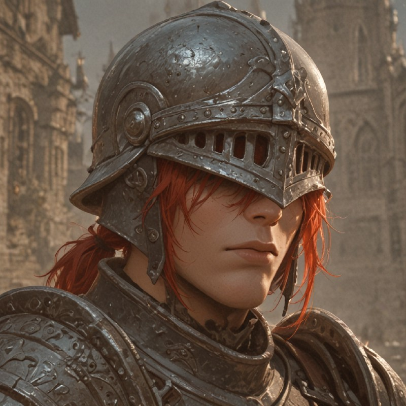
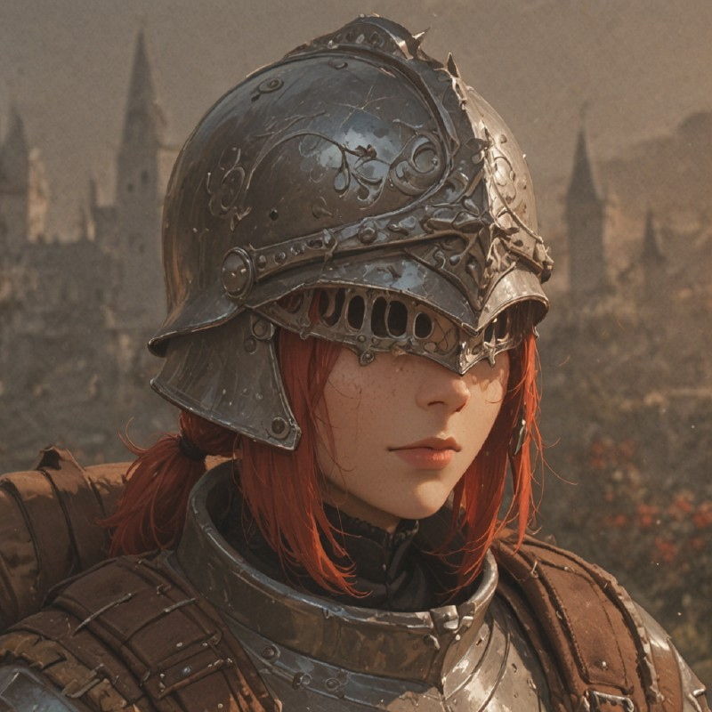
Engineer
Masters of mechanics who deploy portable ballistae and grant mechanical shields to allies. They act as mobile, heavily defended weapon platforms.
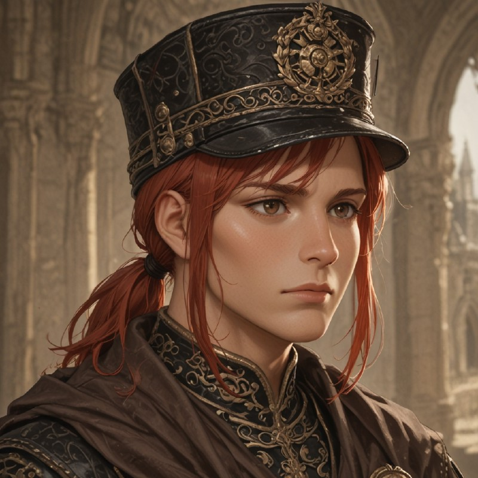
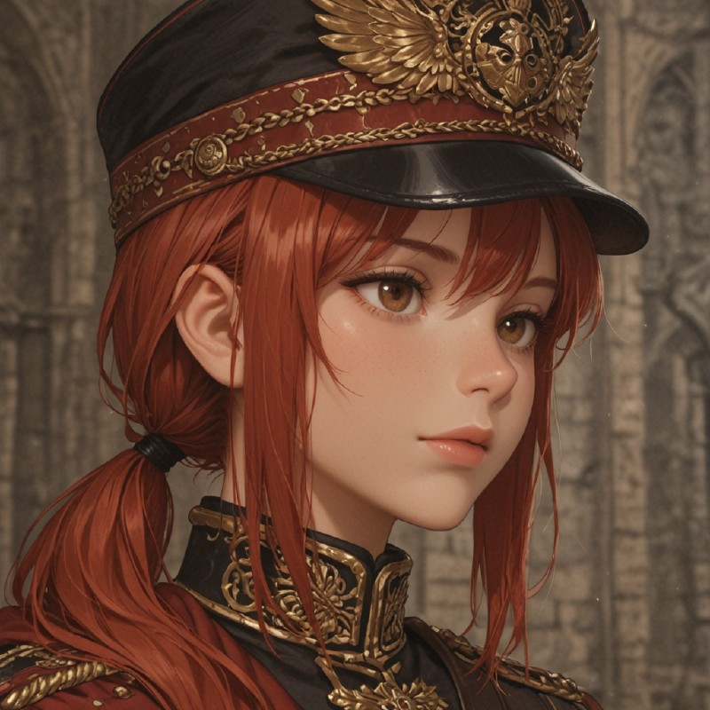
Sharpshooter
Elite snipers utilizing experimental magazines. They deliver devastating, armor-piercing volleys and are the absolute bane of enemy specialists.
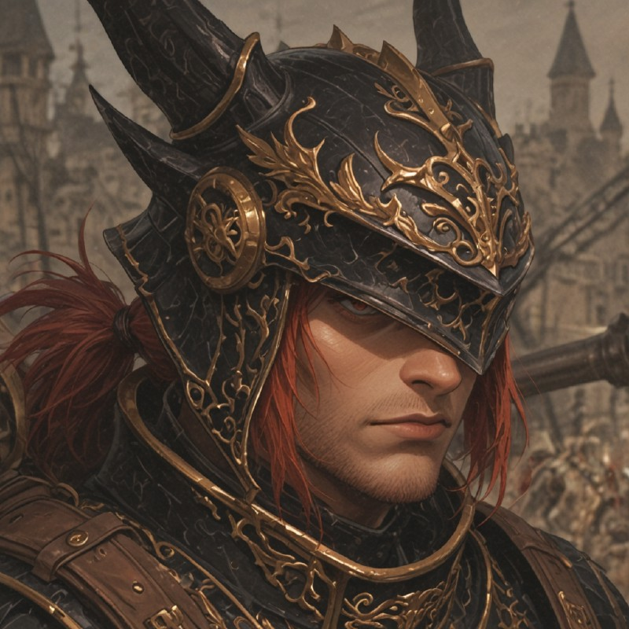
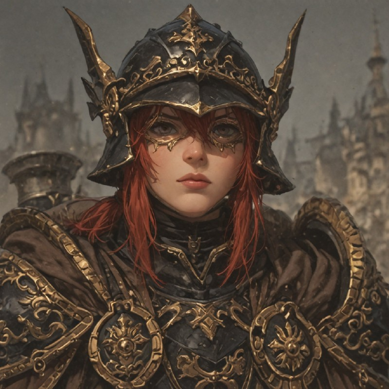
Dragoon
The pinnacle of Valkyrion engineering. Wielding portable hand-cannons and reinforced armor, they rain pure destruction while protecting their allies.